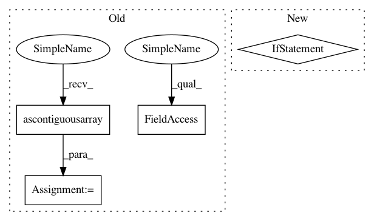

b0b629c6be895dd6b301643daf5a3473ca28a714,skimage/morphology/watershed.py,,watershed,#Any#Any#Any#Any#Any#,151
Before Change
c_image = image.astype(np.float64)
c_markers = np.ascontiguousarray(markers, dtype=np.int32)
c_mask = np.ascontiguousarray(mask, dtype=bool)
c_output = c_markers.copy()
flat_neighborhood = _compute_neighbors(image, c_connectivity, offset)
pq, age = __heapify_markers(c_markers, c_image)
pq = np.ascontiguousarray(pq, dtype=np.int32)
if np.product(pq.shape) > 0:
// If nothing is labeled, the output is empty and we don"t have to
// do anything
c_output = c_output.flatten()
if c_mask is None:
c_mask = np.ones(c_image.shape, np.int8).flatten()
else:
c_mask = c_mask.astype(np.int8).flatten()
_watershed.watershed(c_image.flatten(),
pq, age, flat_neighborhood,
c_mask,
After Change
flat_neighborhood = _compute_neighbors(image, c_connectivity, offset)
marker_locations = np.flatnonzero(markers).astype(np.int32)
if len(marker_locations) > 0:
_watershed.watershed(c_image.ravel(),
marker_locations, flat_neighborhood,
c_mask,
c_output)
c_output = c_output.reshape(c_image.shape)[[slice(1, -1, None)] *
image.ndim]
try:
return c_output.astype(markers.dtype)
In pattern: SUPERPATTERN
Frequency: 3
Non-data size: 4
Instances
Project Name: scikit-image/scikit-image
Commit Name: b0b629c6be895dd6b301643daf5a3473ca28a714
Time: 2016-08-24
Author: juan.n@unimelb.edu.au
File Name: skimage/morphology/watershed.py
Class Name:
Method Name: watershed
Project Name: nipy/dipy
Commit Name: bf4a0a3bf7fc925d6c123a91765ea99ac315668b
Time: 2013-12-23
Author: mrbago@gmail.com
File Name: dipy/tracking/eudx.py
Class Name: EuDX
Method Name: __init__
Project Name: nicodv/kmodes
Commit Name: 60fe2731859d44ad2d94b6699682e077c221bd19
Time: 2016-06-16
Author: nico.devos@autogrid.com
File Name: kmodes/util/__init__.py
Class Name:
Method Name: get_unique_rows